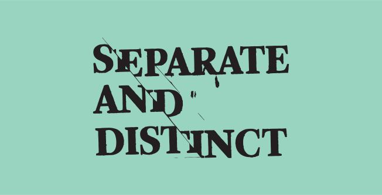
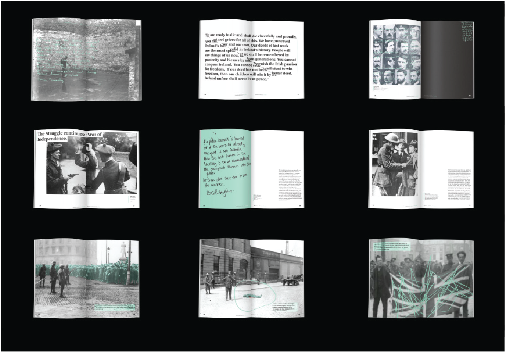
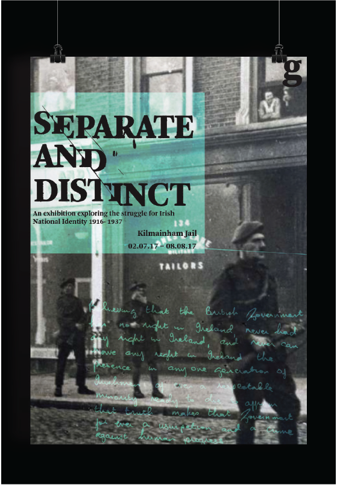
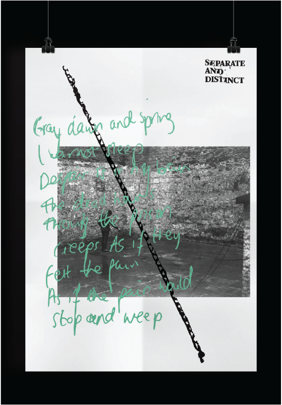
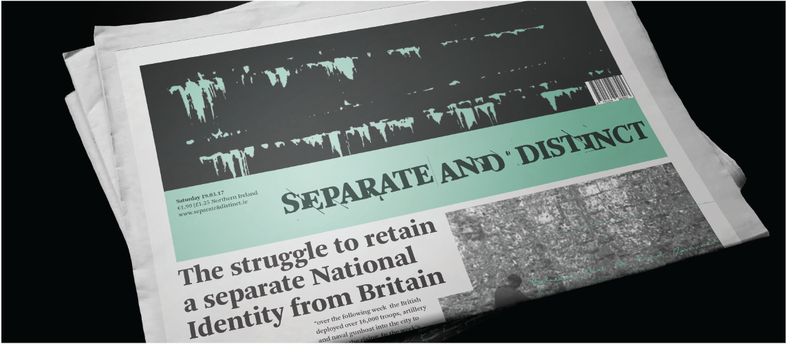

Separate & Distinct
This project focused on creating a catalogue for an exhibition based on an essay I had written on Irish National Identity. Separate and distinct is an exhibition which aims to inform people of the struggle for Irish National Identity.
My thinking
My concept for this project was to visually represent the struggle for Irish freedom and the retention of Irish National identity. Hence why I choose to use distressed typography and graphic forms to do this. Handwriting of notes and letters from the time period become central to my design in order to make it more personable and to appeal to the audiences emotions.




Representing the struggle for Irish freedom using personal stories and handwriting


